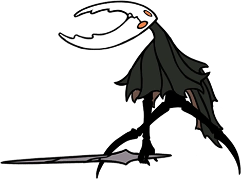

Site feito por: Davi
Feat: Daniel

Jogo feito por: Team Cherry
Resumo
Feat: Daniel
Jogo feito por: Team Cherry
Resumo
Hollow Knight é um jogo de ação e aventura lançado em 2017, desenvolvido e publicado pela Team Cherry. Ele se passa em um mundo subterrâneo chamado "Hallownest", onde o jogador controla um personagem conhecido como "Hollow Knight" em sua jornada para explorar o reino, derrotar inimigos e descobrir segredos ocultos. O jogo apresenta elementos de plataforma, combate, exploração e progressão não linear, junto com uma narrativa rica e complexa contada através de personagens misteriosos e uma atmosfera sombria e melancólica.
Lore
A história de Hollow Knight é contada de maneira fragmentada, e cabe ao jogador descobrir e interpretar os detalhes. Em resumo, o jogo se passa no reino subterrâneo de Hallownest, que já foi um lugar próspero e vibrante, mas agora está em ruínas e cheio de criaturas hostis. O Hollow Knight é um dos personagens que habitam esse mundo e embarca em uma jornada para descobrir o que aconteceu com o reino e tentar restaurá-lo. Ao longo do jogo, o jogador encontra vários personagens que ajudam a contar a história de Hallownest. É revelado que o reino foi dominado por um ser chamado "The Radiance", que buscava controlar um material conhecido como "Escaravelho", que possuía propriedades mágicas poderosas. No entanto, esse poder acabou corrompendo The Radiance e causando uma série de eventos catastróficos que levaram à queda de Hallownest. O jogador deve explorar diferentes áreas do reino, enfrentando inimigos desafiadores e chefes para coletar poderes e habilidades que permitam progredir em áreas anteriormente inacessíveis. No final, o Hollow Knight confronta The Radiance em uma batalha épica para determinar o destino de Hallownest. A história possui várias reviravoltas e um final emocionante que depende das escolhas do jogador.
Personagens Principais:
Hornet é um personagem importante e recorrente no jogo Hollow Knight. Ela é um inseto misterioso e poderoso com aparência semelhante a uma vespa. Hornet desempenha vários papéis ao longo da história, mas seu papel central é o de desafiadora e guia para o protagonista, o Hollow Knight.

O personagem principal de Hollow Knight, conhecido como Hollow Knight, é um protagonista silencioso e misterioso. Ele é uma pequena criatura encapuzada com um corpo semelhante ao de um inseto.
"O Hollow Knight" é escolhido como o receptáculo para aprisionar The Radiance devido à sua natureza vazia, que o torna resistente à influência maligna. Ele passa por um ritual de vinculação para se tornar uma prisão viva, selando The Radiance dentro de si.

The Radiance é um dos principais antagonistas do jogo Hollow Knight. Ela é uma entidade poderosa e a fonte da infecção que assola o reino de Hallownest. The Radiance é retratada como uma figura radiante e brilhante, com asas flamejantes e uma aparência imponente.
Os Sonhadores são seres poderosos que estão adormecidos e aprisionados em sonhos profundos. Eles foram presos por um evento misterioso chamado "Cerimônia do Prego dos Sonhos", que ocorreu muito antes dos eventos do jogo. Esta cerimônia foi realizada para selar The Radiance.

Hollow Knight apresenta uma variedade de personagens secundários, cada um com sua própria história, personalidade e papel no mundo do jogo. Esses personagens desempenham funções diferentes, como fornecer informações, oferecer serviços, vender itens ou até mesmo dar missões ao jogador. Alguns são amigáveis e ajudam o protagonista, enquanto outros podem ser hostis ou indiferentes.
Análise do Jogo
Eu, como escritor e criador deste site, completei Hollow Knight várias vezes, alcançando todos os finais do jogo (incluindo o DLC Godmaster), e posso dizer com confiança que Hollow Knight faz seu trabalho muito bem e é um dos melhores jogos estilo Metroidvania que já joguei, ou talvez até o melhor jogo que já joguei. No entanto, ainda existem pontos positivos e negativos que gostaria de mencionar aqui.
Pontos Positivos:
- - É altamente rejogável devido aos diferentes finais alternativos, segredos e vários modos de jogo.
- - Apresenta uma história fragmentada e rica que é prazerosa de descobrir.
- - A jogabilidade é suave e os gráficos são agradáveis.
- - O jogo possui personagens com histórias intrigantes e profundidade.
- - Os controles e a jogabilidade são fáceis de aprender.
- - A trilha sonora também é digna de nota.
Pontos Negativos:
- - Com seu vasto mapa, a travessia no jogo às vezes pode se tornar repetitiva e tediosa.
- - Não é incomum se sentir perdido no meio do jogo.
- - A primeira jogada pode ser confusa.
- - Além disso, alguns dos ruídos e sons do jogo podem ser desconfortáveis.

 4.5
4.5